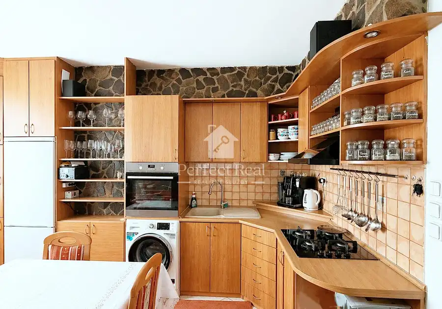
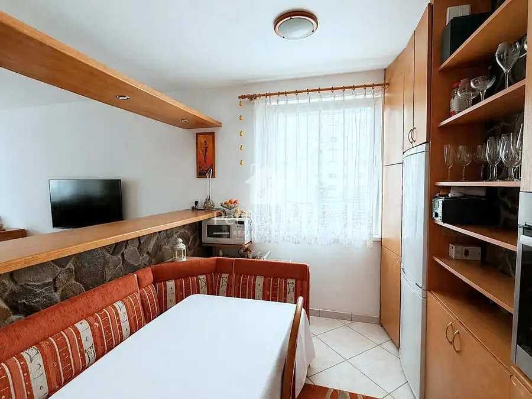
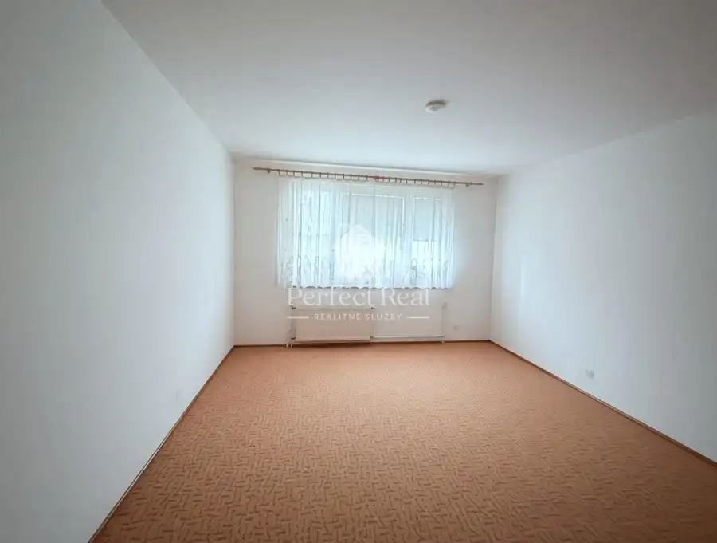
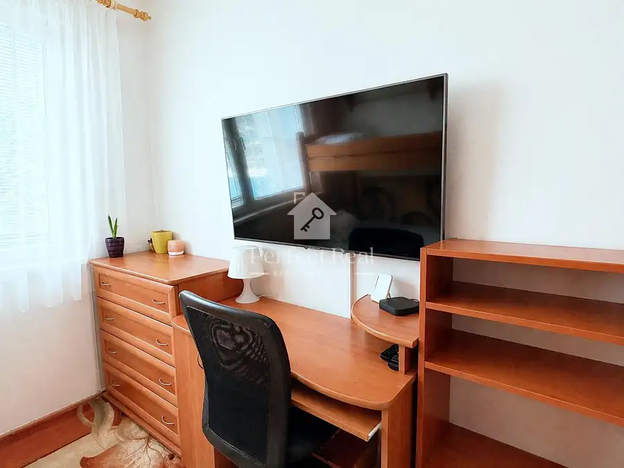
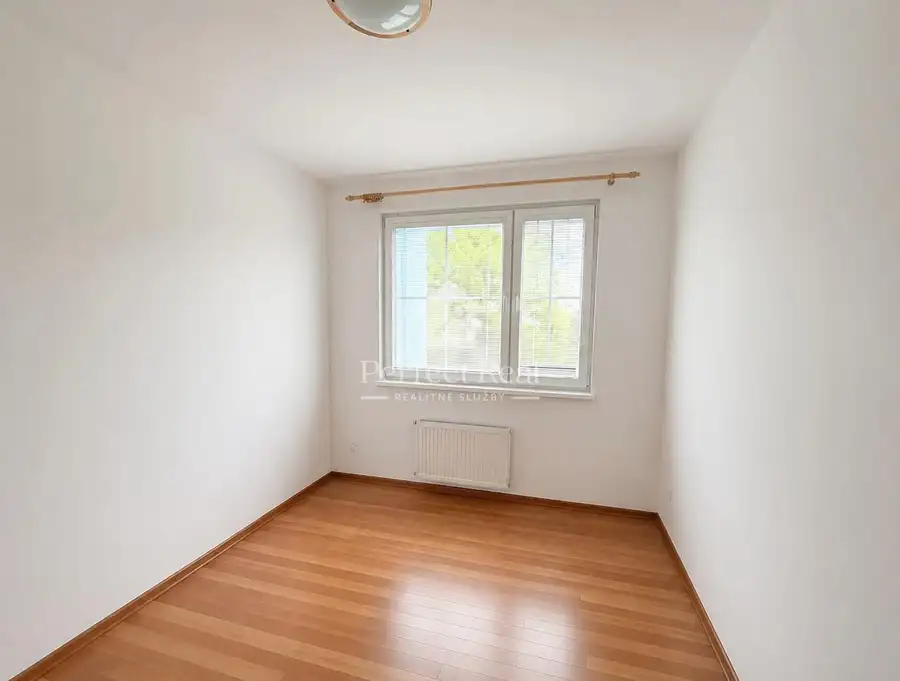
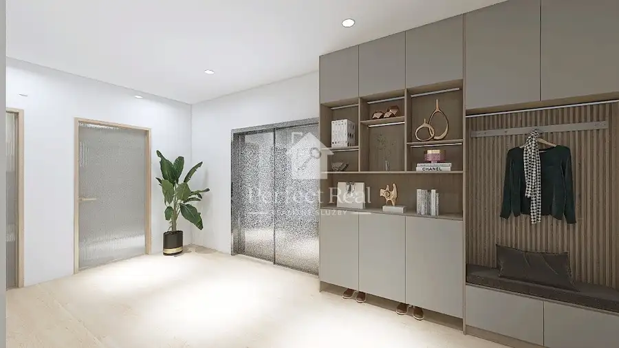
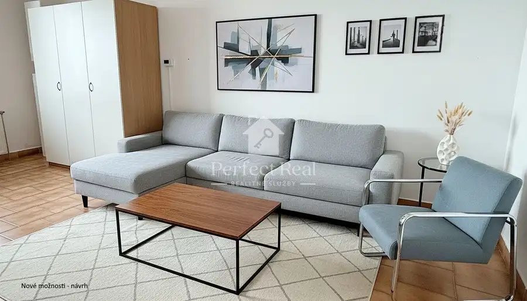
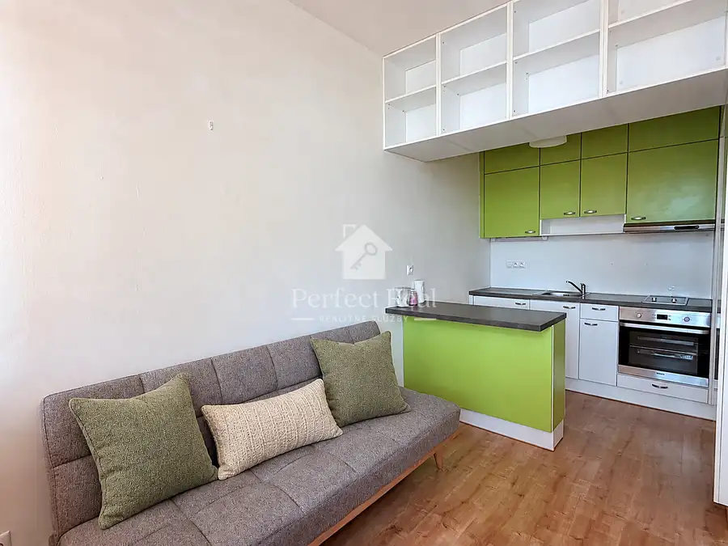

Predaj svetlý 2izbový byt Dúbravka REZERVOVANE!!
Dúbravka, Bratislava





- Dispozícia2-izbový
- Plocha50.5 m²
- Poschodie3. z 12
- StavČiastočná rekonštrukcia
- VlastníctvoOsobné
O nehnuteľnosti
V zastúpení majiteľa ponúkame na predaj veľmi príjemný, tichý , svetlý 2-izb. byt v pokojnej časti Dúbravky na 3poschodí. Bytový dom je zateplený. 2výťahy z toho jeden je nákladný.Rozloha nehnuteľnosti je 51,45m2 vrátane pivnice. Pozostáva zo vstupnej chodby, obývačky prepojenej s kuchyňou, samostatnej spálne, kúpeľňe s vaňou a wc.Pôvodne bola kuchyňa oddelená, staršou rekonštrukciou okolo roku 2002 bola prepojená s obývacou izbou zrušením priečky medzi nimi.Byt je zariadený ako na foto, avšak po dohode s prípadným kupujúcim môže byť nábytok vyprataný. V kuchyni sú kvalitné spotrebiče, plynový sporák a elektrická rúra zn. Electrolux, automatická práčka zn. Whirlpool.Byt je orientovaný na severozápad.V byte je pripojenie na internet.Mesačné náklady na bývanie sú cca do 180,-Eur pre 2 osoby nájomné, plyn 7,-Eur, elektrina 25,-Eur.V izbách je plávajúca podlaha, v kuchyni a na chodbe dlažba, plastové okná. Bezpečnostné dvere. Stupačky sú nové.Nehnuteľnosť sa nachádza v lokalite s kompletnou občianskou vybavenosťou – LIDL, Billa, zastávka MHD, školy, škôlky, kaviarne reštaurácie, neďaleko nákupné centrá Saratov, nákupné centrum Bory Mall. Dobrý výjazd na diaľnicu smer ČR alebo do Bratislavy.Kľudná lokalita s dobrou dostupnosťou do centra mesta. Zabezpečíme komplet právny servis ohľadom predaja – rezervačná zmluva, kúpna zmluva, poplatky na kataster, poplatky u notára, hypotekárne poradenstvo pre kupujúceho, odovzdanie nehnuteľnosti, prepis nehnuteľnosti u správcu, ZSE a SPP, atď.Byt je kúpou voľný.V prípade, že Vás táto ponuka zaujala, neváhajte nás kontaktovať, za účelom dohodnutia obhliadky.Podrobné informácie o ponúkanej nehnuteľnosti dostanete na telefónnom čísle: 0903 203289, email: monika.canova@perfect-real.sk
Parametre
- Cena vrátane energií
- Nie
- Druh
- 2 izbový byt
- Dátum zverejnenia
- 26. 04. 2026
- Orientácia
- Severozápadná
- Podlažie
- 3
- Počet izieb / miestností
- 2
- Počet nadzemných podlaží
- 12
- Stav nehnuteľnosti
- Čiastočná rekonštrukcia
- Telekomunikácie
- Internet, Optická sieť
- Typ
- Predaj
- Vlastníctvo
- Osobné
- Vybavenie
- Výťah
- Úžitková plocha
- 50.5 m²
Kde to je


Mohlo by Vás zaujímať

BytNové 329 000 €Predaj priestranný byt 130m² + terasa 40m² s veľkým potenciálom!!! Dúbravka, Bratislava 4-izbový126.75 m²
BytNové 159 000 €Nebytový priestor (ako 2-izbový byt) Bratislava Dúbravka, Bratislava 2-izbový76 m²
BytNové 135 000 €Predaj 2izbový byt Vlčie hrdlo Ružinov, Bratislava 2-izbový32.47 m²2. podlažie